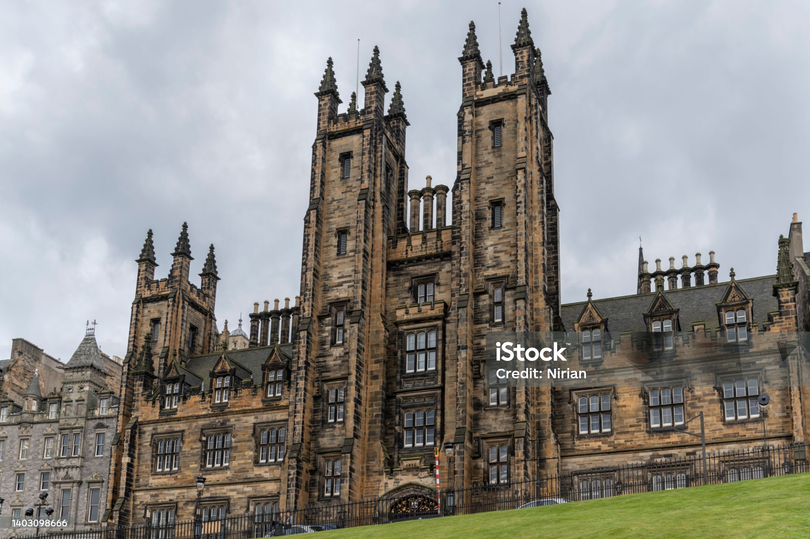

Discover the ancient arts of magic and witchcraft in the heart of Old Town.
Steeped in history and tradition, our college has been a beacon of mystical learning, nestled within the cobblestone streets of Edinburgh's Old Town.
Our legacy is woven into the very fabric of history, stretching back to an age where magic and the mundane walked hand in hand. It is here, within the hallowed halls and secret chambers of our college, that the most esteemed witches and wizards of the ages have honed their craft, under the guidance of masters whose names are etched in the annals of time.
From potion making to ancient runes, explore our diverse range of courses designed to enchant and enlighten.
Become part of a community of fellow witches and wizards, learning to harness the magical forces that govern our world.